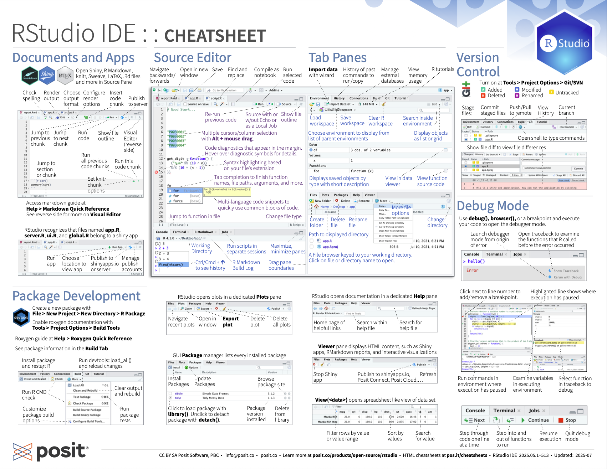
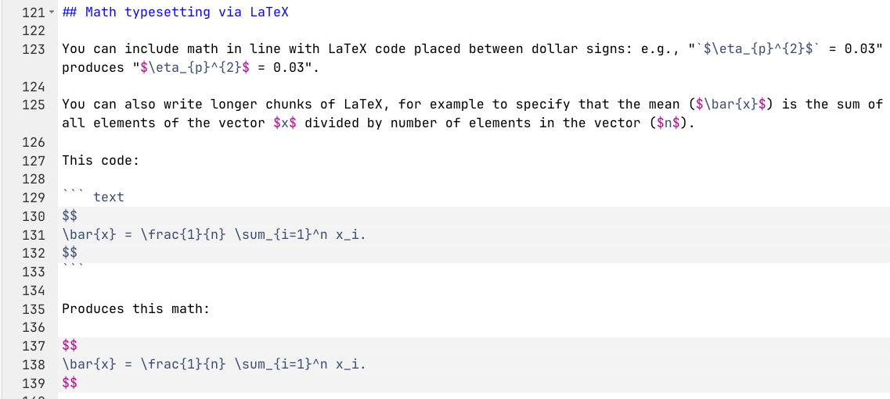
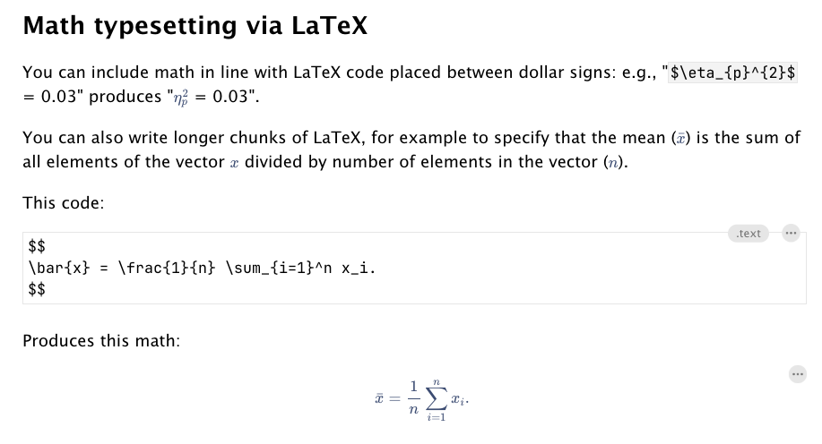
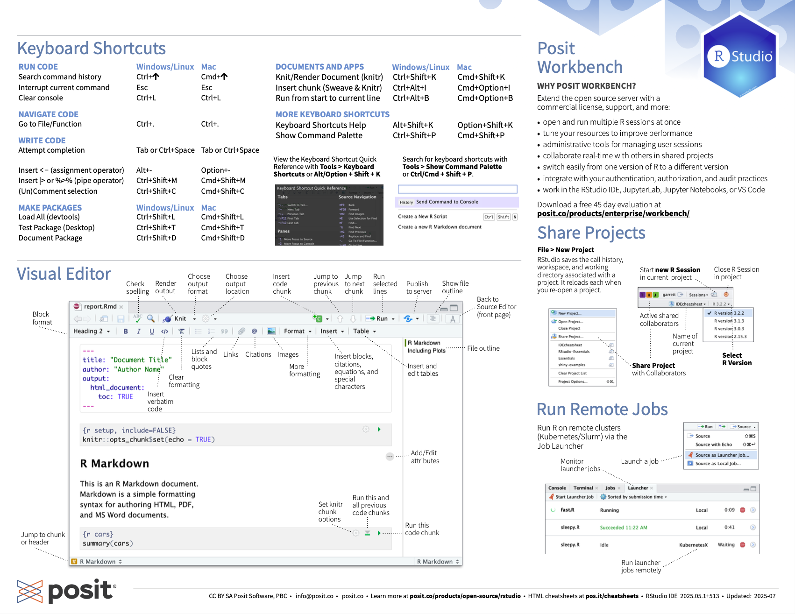
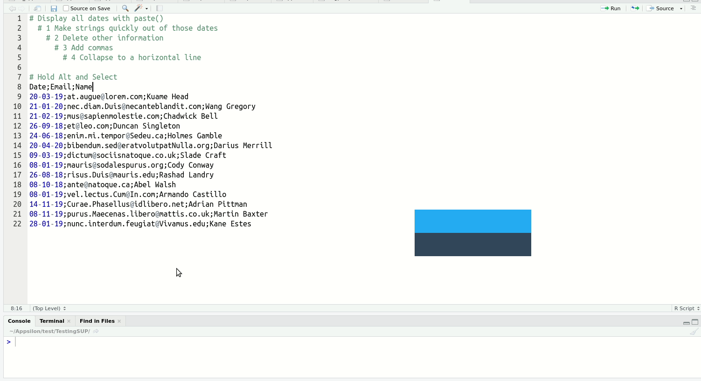

Code
install.packages(tidyverse)This is an understandable point of confusion, so let’s clarify:
There is a long-standing debate about whether base R (alone) or R+{tidyverse} is better. Thankfully, I can resolve this question for you immediately: R+{tidyverse} is better. All hail the One True Language, {tidyverse}.
Get familiar with the different parts of the RStudio IDE user interface with this cheatsheet, which you can also download as a pdf here.

You can view a .qmd file’s raw code in the ‘Source’ viewer. The button for this appears on the top left above the code in RStudio.
Screenshot of Source editor mode:

You can also view the a live preview of the rendered file, including tables, plots, math, etc., using ‘Visual’ editor mode, although there will some simplifications compared to when you render a .html file. We’ll cover rendering in a later chapter.
Screenshot of Visual editor mode:

Once you have learned about some of the concepts mentioned below in later chapters, it can be useful to come back to these cheatsheets to learn the keyboard shortcuts for them.

Windows
|>): shift + Ctrl + MMac
|>): shift + Cmd + MYou can also change or set up additional keyboard shortcuts in the “Tools>Modify keyboard shortcuts” drop down menu. For example, I have modified the shortcut to switch between Source viewer vs. Visual viewer to be “Cmd + `”.
Of the above, multi-line typing is the one that reliably gets an audiable ‘whoa’ from audiences. It’s easier to see than explain:

When you get a bit more experienced with RStudio, I highly recommend you check out this blog post on shortcuts to know about more advanced features such as Function/Variable Extraction, Renaming in Scope, Code Snippets, and advanced search and find-and-replace.
Install libraries from CRAN with install.packages(). This only needs to be done once, not on every run of the script.
install.packages(tidyverse)In-development libraries are sometimes not on CRAN and can be installed directly from GitHub with devtools::install_github().
install.packages(devtools)
devtools::install_github("ianhussey/tides") # username/repositoryNecessary packages (aka dependencies) can be loaded with library(). For tidiness, these should usually all be loaded at the start of your script. Some chapters in this book load libraries only when they’re used, to clearly introduce which packages provide which functions.
library(tidyverse) # umbrella package that loads dplyr/tidyr/ggplot2 and othersSome common packages have identically named functions with different syntax. For example, if you load both {dplyr} and {MASS}, use of the function select() can refer to either dplyr::select() or MASS::select(), and your code might not run if the other package is loaded.
You can see if you have two identically named functions loaded by opening the help menu and seeing if more than one entry appears (e.g. with ?select()).
Avoid this by loading only the packages you need. Debug errors by thinking about these common namespace collisions:
| Function | tidyverse Source | Conflicting Package(s) | Notes |
|---|---|---|---|
| filter | dplyr | stats | stats::filter() is for signal processing (time series) |
| lag | dplyr | stats | Different semantics: dplyr::lag() is simpler |
| select | dplyr | MASS | MASS::select() is for stepwise regression |
| slice | dplyr | IRanges / S4Vectors | Common in Bioconductor workflows |
| rename | dplyr | MASS | MASS::rename() is deprecated, but may still load |
| summarise | dplyr | Hmisc | Hmisc::summarize() differs in behavior |
| intersect | dplyr | base | dplyr re-exports base::intersect() |
| union | dplyr | base | dplyr re-exports base::union() |
| setdiff | dplyr | base | dplyr re-exports base::setdiff() |
| count | dplyr | plyr | Different behavior/output in plyr::count() |
| desc | dplyr | IRanges | Conflicts with IRanges sorting |
| mutate | dplyr | plyr | Conflicts common when plyr is loaded |
| arrange | dplyr | plyr | Subtle differences; dplyr preferred |
Solve this issue either by specifying which package should be used each time you use the function (e.g., dplyr::select() instead of select()) or by specifying below your library() calls which version is preferred:
library(conflicted)
conflict_prefer(name = "select", winner = "dplyr")[conflicted] Will prefer dplyr::select over any other package.Assignment of objects is done via <- by convention.
# set the variable x to be the number 5
x <- 5
# print the contents of x
x[1] 5Technically you can also use =, but it’s best to avoid it.
# set the variable y to be the string "hello"
y = "hello"
# print the contents of y
y[1] "hello"It’s somewhat less well known, but you can also do “right-assignment” (->) instead of the much more common left assignment (<-).
# set the variable y to be the string "really? yes."
"really? yes." -> z
# print the contents of z
z[1] "really? yes."Edit your local copy of this .qmd file to make the following changes. If you’re reading this as an eBook on the website, create a new .R file in RStudio on your computer (‘File>New File>R script’). Copy and paste the code below into that file.
We will cover the functions used in the code in later chapters - you don’t need to understand it yet. Notice that the indentation or ‘white space’ is somewhat chaotic.
Fix this with a keyboard shortcut: with your mouse, highlight the code and press Ctrl + I (Windows) or Cmd + I (Mac) to fix the indentation. Notice how much easier it is to read.
You can undo this with Ctrl + z (Windows) or Cmd + z (Mac) if you want to see it before/after again.
# create table
dat_processed_long %>%
# summarize mean and SD by subscale
dplyr::group_by(subscale) %>%
dplyr::summarize(n = dplyr::n(),
m = mean(score, na.rm = TRUE),
sd = sd(score, na.rm = TRUE)) %>%
# round estimates
dplyr::mutate(m = janitor::round_half_up(m, digits = 2),
sd = janitor::round_half_up(sd, digits = 2)) %>%
# print nicer table
knitr::kable(align = 'r') |>
kableExtra::kable_styling()